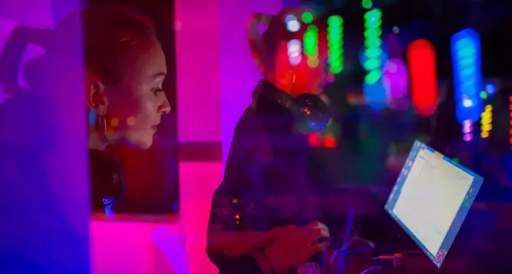
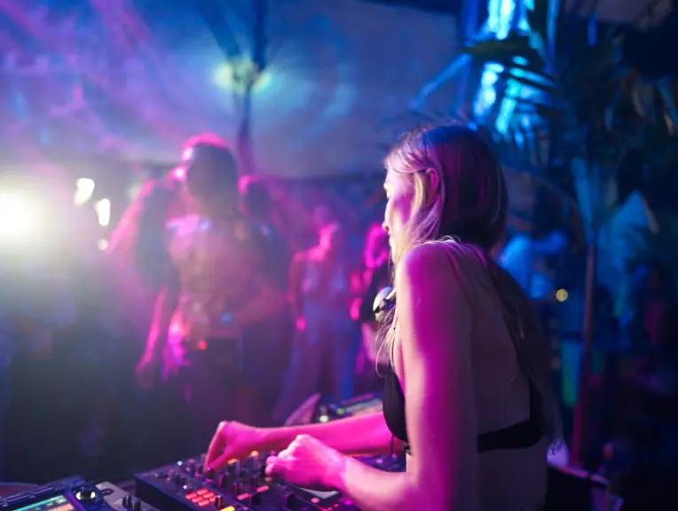
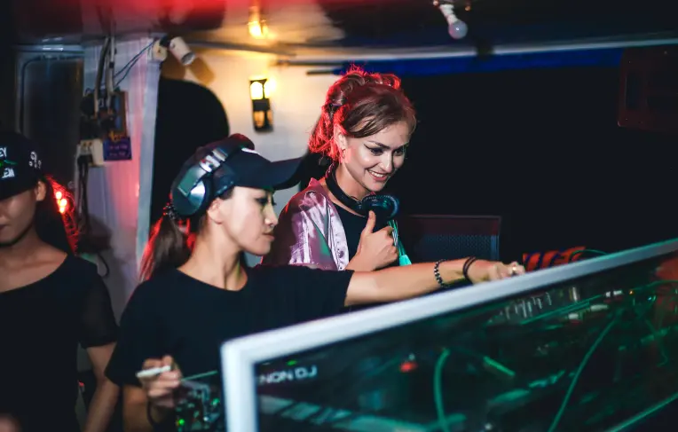
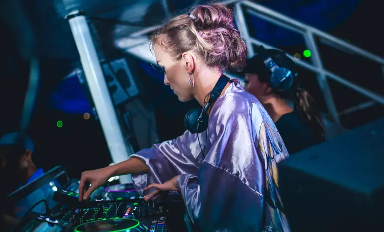
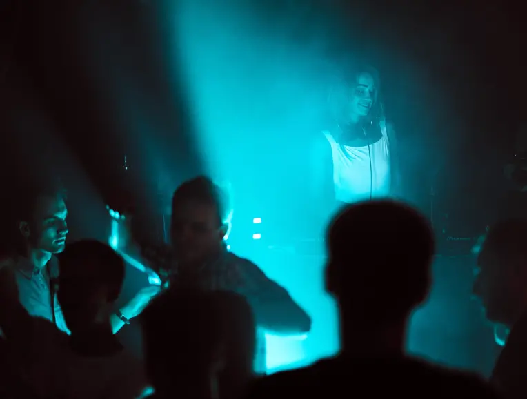

My name is Dara
I am a DJ
performer and music
producer
Working in the genres of melodic techno, progressive house,
indie dance, and ethnic music. And I want to tell you
about my project The DARA
indie dance, and ethnic music. And I want to tell you
about my project The DARA
My name is Dara.
I am a DJ, perfomer
and music producer
I am a DJ, perfomer
and music producer
Working in the genres of melodic techno, progressive house, indie dance, and ethnic music. And I want to tell you about my project The DARA.
about me
01
Through my music I strive to express my passion for the mysteries of our planet Earth - to it’s mysteries, magical rituals and processes of eternal life.
02
In my compositions, you will hear the sounds of nature, echoes of mysterious Asian-inspired melodies, Indian mantras, and African rhythms.
03
I have always felt a love for freedom and travel. For 7 years now, I have been following my path, traveling around the world.
I have visited 30 countries and in most of them I performed as a DJ. My brightest performances took place in Mexico, Spain, Greece, Indonesia, Thailand, India, Vietnam, Latvia, Poland, Georgia, Ukraine, and Russia.
In each new country, I get inspired and create amazing music filled with special moods, colors and vibes. And, of course, in every country, I performed as a DJ and created a magical mood on the dance floor.
In each new country, I get inspired and create amazing music filled with special moods, colors and vibes. And, of course, in every country, I performed as a DJ and created a magical mood on the dance floor.
“The DARA is a child of the Planet and the World”

In 2021, four of my tracks were released
on well-known labels.
on well-known labels.

releases
2021
The first single "Vajra" in our collaboration with talented LACULARIS was released on January 15, 2021 via KIDS Records Foundation. That label is a charity organization and all profits are donated to UNICEF. Let's help children in needs together!
In 2021, four of my tracks were released on well-known labels: The first single "Vajra" was released on January 15, 2021 via KIDS Records Foundation.
listen
2021
2021
The track "Interstellar" is out on Trippy Code Records on August 8, 2021. I was inspired by Hans Zimmer - my favorite composer ever.
The third track "Interstellar" is out on Trippy Code Records on August 8, 2021
listen
2021
2021
The track "Kult" was released on ICONYC Noir on November 12, 2021. Powerful energy awakens into me at night. Embracing my wildness, I made this track in a single breath. I love the light as much as I love the dark.
The creation of the track "Kult" was a huge step for my creativity and career. I have always known that I am the light. I bring kindness and love to this world.
listen
2021

2022
My new track “Eastern Spirit” was released on April 22, 2022 via TRIP & dream Records that I made with a live duduk wind instrument. You know my love for oriental music. It makes my heart beat faster!
My new track “Eastern Spirit” was released on April 22, 2022 via TRIP & dream Records.
listen
2022

Those who know me personally have already felt my energy. My mission is to share love, shine and magic with the world through music. Can you feel it?
Those who know me personally have already felt my energy. My mission is to share love, shine and magic with the world through music. Can you feel it?
listen
2022

Unforgettable night at MorninGlory. I was so excited to play with such a cool Dj’s as Mariano Mellino (Balance), Doctor Dru (Diynamic), Aaron Suiss (Outta Limits). Thanks everyone who was there!
Unforgettable night at MorninGlory. I was so excited to play with such a cool Dj’s as Mariano Mellino (Balance), Doctor Dru (Diynamic), Aaron Suiss (Outta Limits). Thanks everyone who was there!
listen
2022
The track “kult”

"Kult" reflects my dark side. It was inspired by the she-wolf within. Experience just a taste of my story: Imagine the night. The world is in darkness. Thunder, lightning slashes through the gloomy sky. Wild horses run across the field. The voice of a she-wolf comes from the forest. It calls me.
I follow the call, gradually sinking into the darkness. Suddenly, there is a calm: hope for a brighter future...
I follow the call, gradually sinking into the darkness. Suddenly, there is a calm: hope for a brighter future...
work
Birthday party, Minsk, Belarus 2018
Live Techno Mix, Kiev, Ukraine 2019
sphera club, batumi, georgia 2021
SailingClub, PhuQuok, Vietnam 2019
La Terrazza Del Mar, Tenerife, Spain 2021
Virtual Burning Man Multiverse 2020
UNITY by LOKAPALAS, After Bali Club, Playa del Carmen, Mexico 2022
Boat Party, PhuQuok, Vietnam 2018
happyradio.fm, kiev, ukraine 2021
WORK
the dara Story
2019
In all the countries in which I lived, I performed as a DJ. The most significant performances for me took place here: "Atlas Weekend 2019" is one of the largest music festivals in Europe.
2020
"Virtual Burning Man 2020 Multiverse" is my virtual debut. The idea of “Burning Man” is close to me, and the reason I am a part of the Ukrainian community of burners Kurenivka Camp.
2022
"MorninGlory 2022" jungle party in Playa Del Carmen, Mexico. I was happy to be a part of this magical event. "MorninGlory" is an experience that you will remember for the rest of your life.
2022
The track “Kult” won the award in the GBA 2022 Art Show “Blockchain meets Art - The new Renaissance”
speech
I am an open person and, like many other people, have several talents. I reveal my talents through music, modeling, and charity. I unite people through love for beauty and music, through dancing, through kindness and compassion.
Being open, communicating, helping, loving, and exchanging energies are the simplest and most important things we can do in our lives.
Every single one of my performances is my own show, my own performance. I create all images myself. This makes my performances unique and vibrant, and suitable for different events.
I have been living in Mexico (Playa del Carmen) since the spring of 2022. This country has touched my heart with its culture, nature, beauty and club life. I plan to stay here, fill up, travel and make more beautiful music.
Being open, communicating, helping, loving, and exchanging energies are the simplest and most important things we can do in our lives.
Every single one of my performances is my own show, my own performance. I create all images myself. This makes my performances unique and vibrant, and suitable for different events.
I have been living in Mexico (Playa del Carmen) since the spring of 2022. This country has touched my heart with its culture, nature, beauty and club life. I plan to stay here, fill up, travel and make more beautiful music.
my gigs in mexico
01
Playa del Carmen
“state Quintana Roo”
“state Quintana Roo”
Places: MorninGlory , Santino|On Heaven, After Bali, The Carmen Playa , We Playa.
02
Playa del Carmen
“state Quintana Roo”
“state Quintana Roo”
Places: La Old School Bar , MVNGATA Boutique Hotel, Soundset Beach Club.
03
tulum
“state Quintana Roo”
“state Quintana Roo”
Places: Kinich Ahau , Funky Burrito.
04
Mexico City
state “CDMX”
state “CDMX”
Places: Teotihuacan, Vinylbox.
My performances can take place at events of different concepts
Night clubs, Restaurants, Bars, Terraces, Roofs, Beach clubs, Hotels, Private parties.

For each performance, I select music depending on the audience and location. My performance costumes contribute to my mood, music and overall who.
I would love to perform at your event. I am open to suggestions. You can find my contacts and links to social networks at the end of the text.
I would love to perform at your event. I am open to suggestions. You can find my contacts and links to social networks at the end of the text.
See you on the dance floor, grooving to the sound of my music.
reviews
Brandon
NYC
My compliments don’t mean much but I found your music hit my core. It’s so dimensional full and deep. Truly talented and wish this vibe could come over to New York!

Moises Entebi
PDC Mexico
Thank you Dara for so much good music and so many good times that you have given to PDC. Never doubt about your abilities or stop chasing your dreams. YOU ARE GREAT! KEEP IT UP!

Yulita
Russia
THE DARA , She has a certain style, to “ UP” people to the dance floor. That's why we go to her.